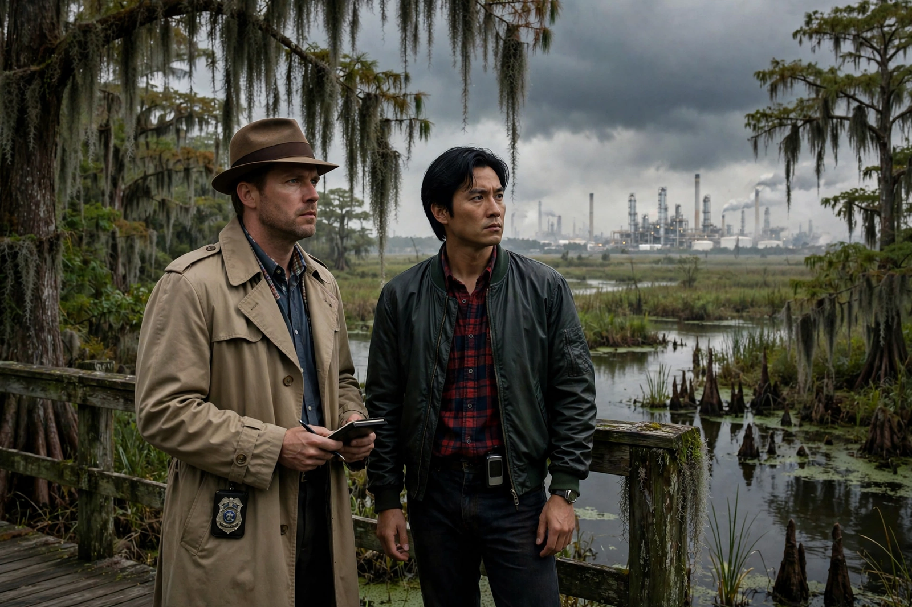

| True Detective | |
|---|---|
 | |
| Genre | Crime drama, anthology, neo-noir, mystery |
| Created by | Nic Pizzolatto |
| Starring | Matthew McConaughey, Woody Harrelson, Colin Farrell, Rachel McAdams, Mahershala Ali, Jodie Foster (various seasons) |
| Country of origin | United States |
| No. of seasons | 4 |
| No. of episodes | 30 |
| Original network | HBO |
| Original release | January 12, 2014 – present |
True Detective is an American anthology crime drama television series created by Nic Pizzolatto and broadcast by HBO. Each season follows a new set of detectives and a new case, with self-contained storylines and different casts. The series premiered on January 12, 2014.
The first season, set in Louisiana, stars Matthew McConaughey as Rust Cohle and Woody Harrelson as Marty Hart, two homicide detectives hunting a ritualistic serial killer across a seventeen-year span, the case intercut between 1995 and 2012. Directed entirely by Cary Joji Fukunaga, it became a cultural phenomenon, celebrated for its cinematography — including a celebrated six-minute tracking shot — and for Cohle's bleak philosophical monologues.
The second season (2015), set in California, stars Colin Farrell, Rachel McAdams, Vince Vaughn, and Taylor Kitsch in a story of municipal corruption, and received mixed reviews. The third season (2019), set in the Ozarks across three time periods, stars Mahershala Ali and was received as a return to form. The fourth season, True Detective: Night Country (2024), was written and directed by Issa López and stars Jodie Foster and Kali Reis as detectives investigating a disappearance in fictional Ennis, Alaska, during the polar night; it became the most-watched season of the series.
The first season won five Primetime Emmy Awards, including Outstanding Directing for Fukunaga, and made "time is a flat circle" a popular catchphrase. The series helped cement the prestige anthology format in American television and the migration of major film actors to cable drama.